Blazor control UI: operator console (20 Explore-style features)
2026-11-21 · Blazor WASM control UI + .NET API proxy, Release build on port 5081 against the current behaviour service on port 8767 (--no-mirror). Captured with headless Chrome through the DevTools protocol. Contract: docs/service_api.md sections 4-7. The Unreal twin panel implements the same features; its report is unreal_console_report.html.
Test data. No physical robot was connected. Telemetry comes from the practice stand twin: a practice snapshot, a 20 s practice monitor, the "wave ready" pose, two pre-flight ticks, a walk speed cap of 0.5x and a calibration capture against the home pose taken while the twin still held "wave ready" (so the right arm is correctly flagged ">3° check").
Before
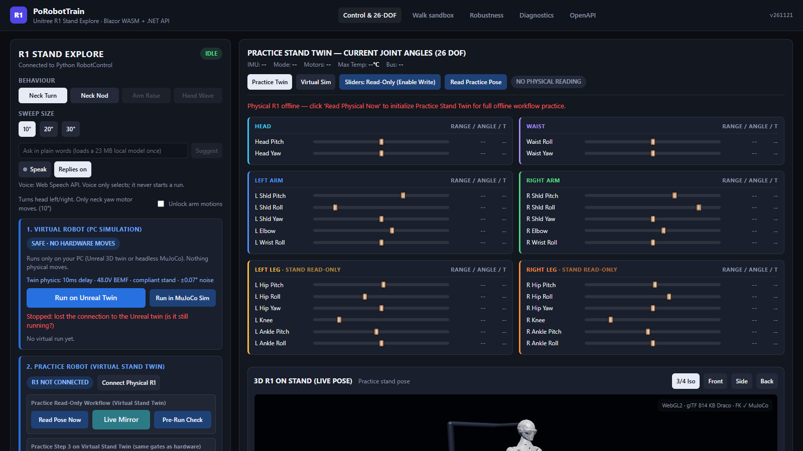
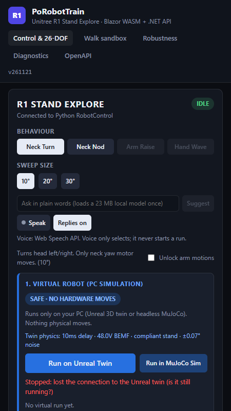
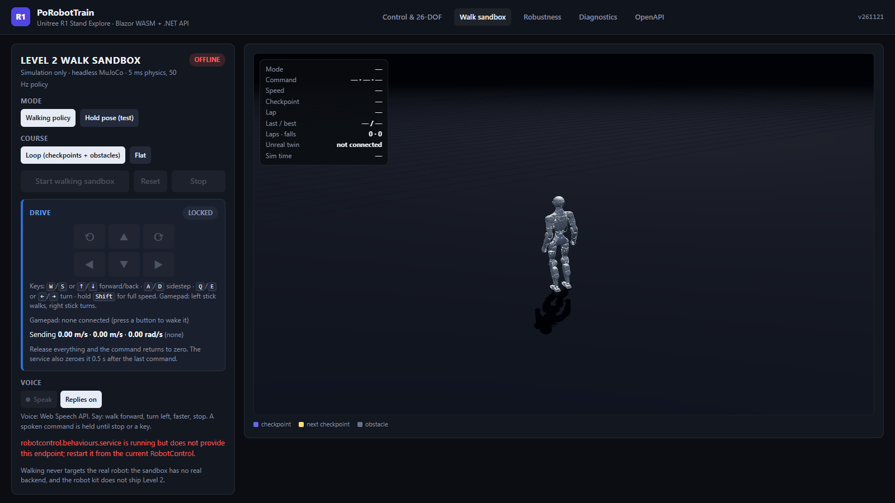
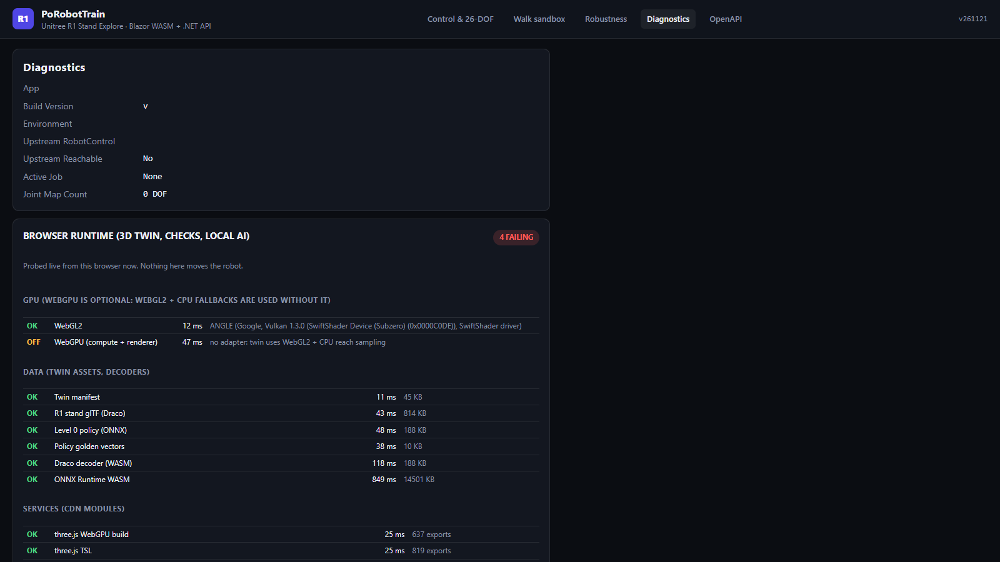
After

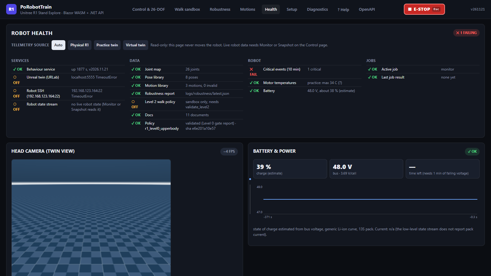
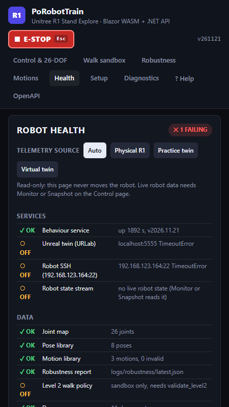
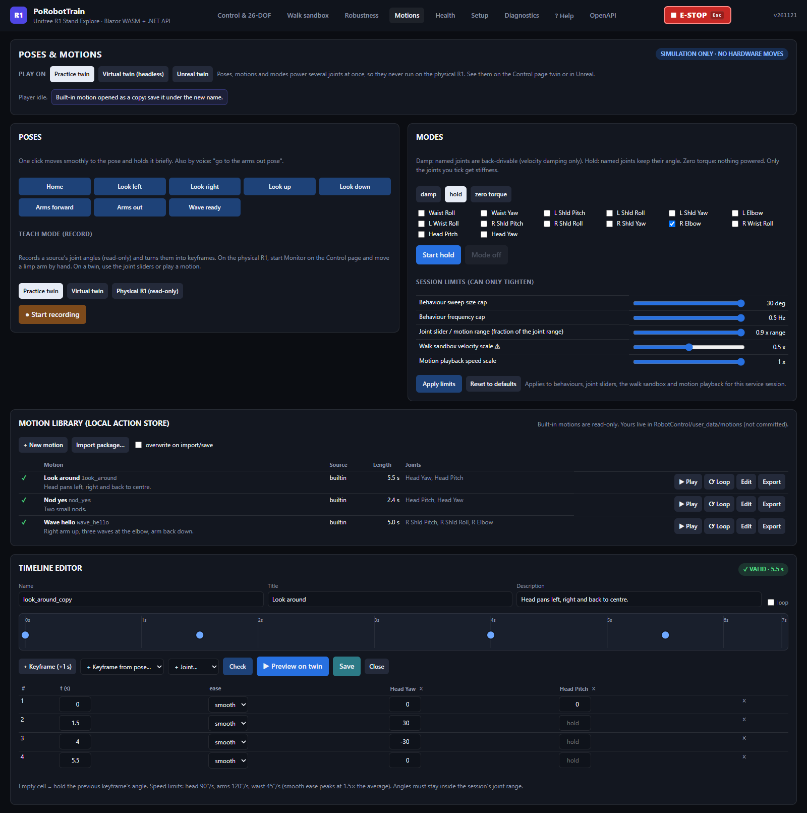
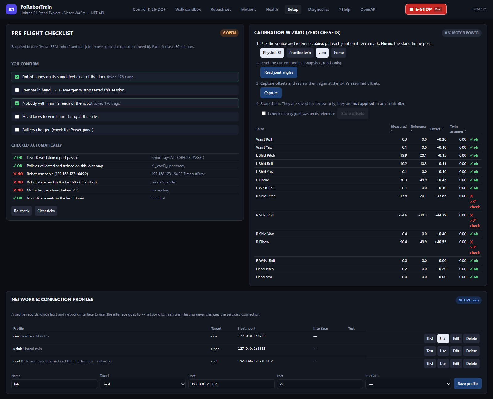
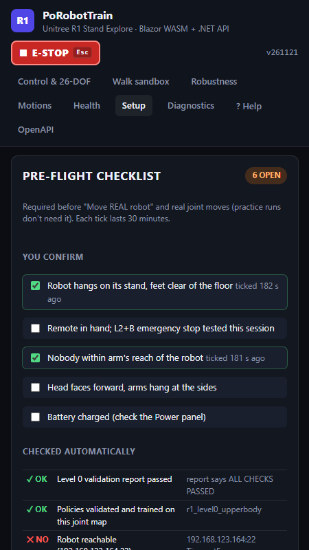
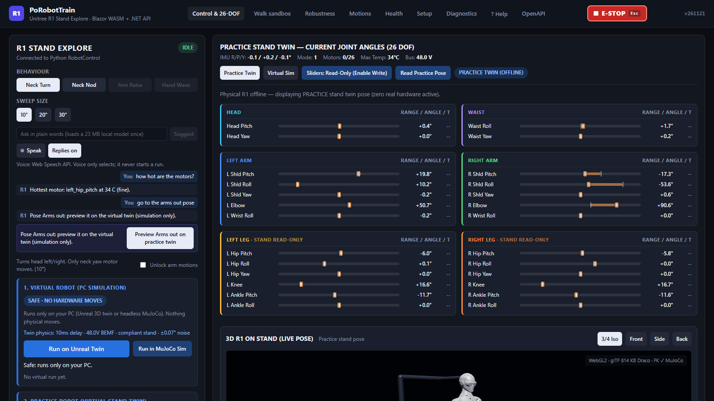
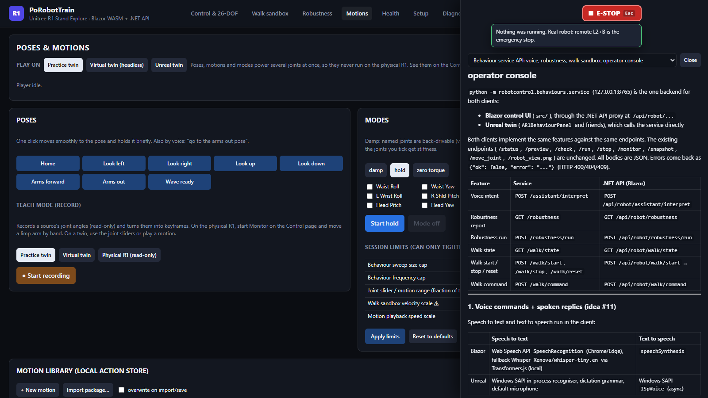
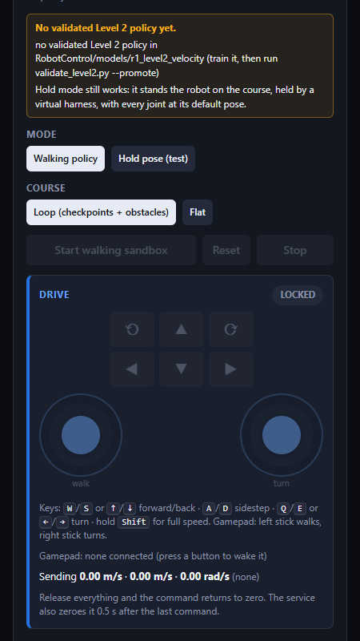
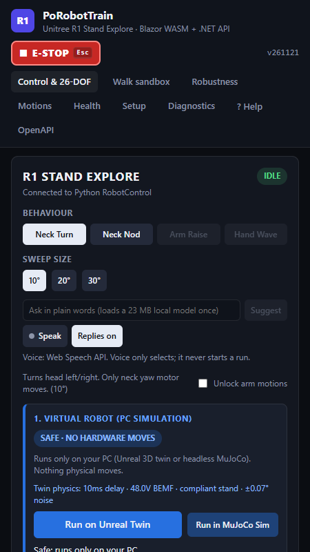
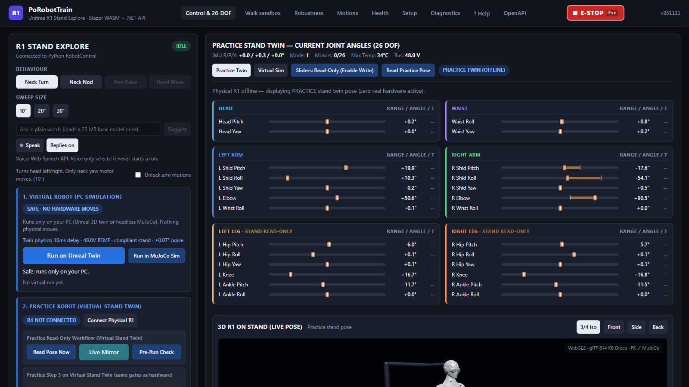
Checks
| Check | Result |
|---|---|
pytest (repo root, includes 22 new console tests) | 149 passed |
dotnet test tests/PoRobotTrain.Integration (forwarding, status codes, old-service 501, 21 real service payloads through the client JSON context) | 27 passed |
dotnet test tests/PoRobotTrain.Unit | 12 passed |
python web/build.py | built |
| R1TwinEditor build (Unreal panel parity) | succeeded (see the Unreal report) |
ruff check / ruff format --check | not run: ruff is not installed in .venv |
Not verified
- No physical R1: the real camera stream (not implemented: no streamer on the robot), real telemetry sources, robot reachability and the real pre-flight auto items were not exercised. The real-robot path for motions, poses and modes is refused by design.
- Unreal mirroring of motion playback (
target: urlab) was not watched: the service ran with--no-mirror. - Pointer drags (timeline keyframes, thumbsticks), the
Eschotkey, file import through the picker and CSV/package downloads were not driven by the capture. E-STOP and Help were clicked by script. ruff checkandruff format --checkwere not run (see above).